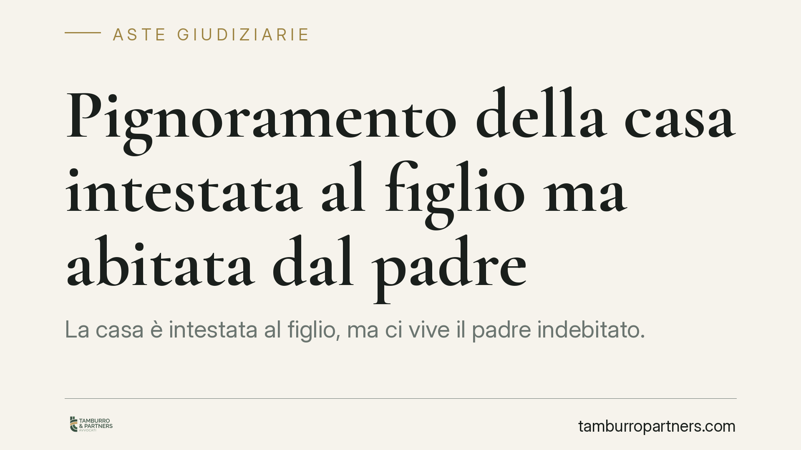

Pignoramento della casa intestata al figlio ma abitata dal padre
La casa è intestata al figlio, ma ci vive il padre indebitato. I creditori possono aggredirla? La risposta cambia radicalmente a seconda di chi ha contratto il debito e di come l'immobile è finito in capo al figlio. Un tema che intreccia diritto di famiglia ed esecuzioni immobiliari, con margini di tutela e rischi spesso sottovalutati.

Il problema
Una situazione ricorrente: il padre è esposto verso banche, fornitori o l'amministrazione condominiale, ma la casa in cui vive risulta intestata al figlio. Il creditore che voglia recuperare il proprio credito può pignorare quell'immobile? Oppure l'intestazione al figlio funziona come uno scudo?
La questione non ha una risposta unica. Tutto ruota attorno a due domande preliminari: di chi è il debito e come l'immobile è arrivato al figlio.
Inquadramento normativo
Il punto di partenza è l'art. 2740 del codice civile: il debitore risponde delle proprie obbligazioni con tutti i suoi beni, presenti e futuri. Il patrimonio del debitore è la garanzia dei creditori. Da qui una prima regola: se la casa è intestata al figlio e il debito è del padre, l'immobile in linea di principio non è aggredibile, perché non appartiene al debitore.
Il discorso cambia se l'intestazione al figlio è stata usata per sottrarre il bene ai creditori del padre. Qui entra in gioco l'azione revocatoria (art. 2901 c.c.): il creditore può chiedere al giudice di dichiarare inefficace nei suoi confronti l'atto con cui il debitore ha diminuito la propria garanzia patrimoniale, ad esempio una donazione della casa al figlio. Dichiarato inefficace l'atto, il creditore può procedere all'esecuzione sul bene come se non fosse mai uscito dal patrimonio del debitore (art. 2902 c.c.).
Per le donazioni esiste inoltre uno strumento più rapido: l'art. 2929 bis c.c. consente al creditore, a certe condizioni e nel termine di un anno dalla trascrizione dell'atto pregiudizievole, di pignorare il bene donato senza dover prima ottenere una sentenza di revocatoria. È una corsia accelerata pensata proprio contro gli atti gratuiti che svuotano il patrimonio del debitore.
Infine, quando il figlio ha concesso al padre un vero e proprio diritto di abitazione (art. 1022 c.c.), quel diritto ha rilievo: consente al genitore di abitare la casa per i bisogni suoi e della famiglia. Ma è un diritto personale, non pignorabile e non cedibile, e non impedisce di per sé l'esecuzione sull'immobile per i debiti del proprietario, cioè del figlio.
Implicazioni pratiche
Le combinazioni sono sostanzialmente tre.
Debito del padre, casa intestata al figlio da tempo e senza intenti fraudolenti. L'immobile non è aggredibile dai creditori del padre. La semplice residenza del genitore non trasforma la casa in bene del debitore.
Debito del padre, casa donata o intestata al figlio per sottrarla ai creditori. Il bene è a rischio. Con la revocatoria ordinaria il creditore deve dimostrare il pregiudizio e, per gli atti a titolo oneroso, la consapevolezza del terzo. Con l'art. 2929 bis, per le donazioni recenti, la tutela del creditore è molto più incisiva e veloce.
Debito del figlio proprietario. La casa è pienamente pignorabile, anche se ci vive il padre. La presenza del genitore, o un eventuale diritto di abitazione a suo favore, non blocca l'esecuzione: il padre potrà tutt'al più far valere il proprio diritto nel giudizio, ma l'immobile resta oggetto della procedura.
La giurisprudenza, dalla Cassazione ai tribunali di merito, è costante nel distinguere l'intestazione genuina dall'operazione elusiva. Ciò che pesa è la sostanza economica: chi ha pagato, quando, con quali fondi, e con quale scopo.
Cosa fare in concreto
- Verificate la data e la natura dell'atto di intestazione: donazione, compravendita reale, o passaggio simulato. Da qui dipende quale strumento il creditore può usare e in quali termini.
- Controllate la posizione debitoria di padre e figlio separatamente: individuate con precisione chi è il debitore prima di valutare ogni rischio sul bene.
- Se avete concesso o ricevuto un diritto di abitazione, formalizzatelo correttamente con atto scritto e trascrizione, senza illudervi che renda l'immobile intoccabile.
- Monitorate i termini dell'art. 2929 bis: per le donazioni, l'anno dalla trascrizione è decisivo per i creditori e per chi vuole difendersi.
- Rivolgetevi a un professionista prima di qualsiasi atto di trasferimento tra familiari: gli interventi tardivi, a debito già maturato, sono i più esposti alla revocatoria.
In sintesi
L'intestazione al figlio non è né uno scudo automatico né una garanzia di aggressione. Conta chi deve, come il bene è passato di mano e in quali tempi. Ogni caso va valutato sui documenti.
Contributo informativo a cura di Tamburro & Partners - Avv. Giuseppe Tamburro. Non costituisce parere legale.
Comprare bene all’asta si può.
Se vuoi acquistare un immobile all’asta in sicurezza o difendere un esecutato, scrivi allo studio. Ti rispondiamo entro un giorno lavorativo.